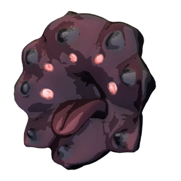

Darkmouth
背景

这是一种栖息于沼泽的捕食者，据信由掘洞沙虫演化而来。它们过去居住的沙丘被认为风险较低，因此被用来训练新手法师使用重力魔法。轻质沙土资源丰富，很容易产生训练效果。
由于周围不断积累魔法，沙子逐渐充满重力粒子，并发展出某种自然漂浮性。沙虫在挖洞时经常吞食这些沙子，身体变得越来越轻，逐渐减少对蛮力的依赖，最后完全演化为空中生物。
很方便的是，它们的新形态也让法师们获得了绝佳的打靶练习对象。
策略
Darkmouth 是一场简单的飞行 Boss 战。它会尝试与对手保持距离，并使用 2 种攻击。第一种是毒性投射物齐射，命中时有概率施加中毒减益。另一种是朝目标冲锋，造成明显更高的伤害。它通常会交替使用攻击，但偶尔会改变攻击模式和时机，试图让对手措手不及。
统计
基础 HP：4200
伤害：物理和毒
| 属性 | 抗性 |
|---|---|
| 物理 | 中性 (1x) |
| 火焰 | 中性 (1x) |
| 冰霜 | 中性 (1x) |
| 电击 | 中性 (1x) |
| 光耀 | 抗性 (0.5x) |
| 暗影 | 弱点 (1.5x) |
| 毒 | 弱点 (1.5x) |